Text-to-image models sometimes copy their training data.
RADS learns to steer them away as they generate, leaving the model itself untouched.
Read the abstract
Text-to-image diffusion models are susceptible to memorization, revealing a fundamental failure to generalize beyond the training set. Current mitigation approaches often sacrifice image quality or prompt alignment to reduce memorization. To address this, we propose Reachability-Aware Diffusion Steering (RADS), an offline-trained, sampling-time control framework that mitigates memorization while maintaining generation fidelity. RADS models the diffusion denoising process as a dynamical system and learns a policy-conditioned reachability value function that estimates future memorization risk along the denoising trajectory. This motivates a constrained reinforcement learning (RL) formulation, where a policy learns to steer the trajectory away from memorization via perturbations in the caption embedding space. Empirical evaluations show that RADS achieves a stronger empirical Pareto frontier between generation diversity (SSCD), quality (FID), and alignment (CLIP) compared to state-of-the-art inference-time baselines. Crucially, RADS applies the learned controller during sampling time, separating memorization mitigation from the pretrained model.
Existing fixes trade one problem for anotherStable Diffusion v1.4, one memorized prompt, three outcomes.
Some captions make Stable Diffusion reproduce a specific training image almost exactly, which is a problem when that image is copyrighted or private. Existing inference-time fixes tend to either leave the copy in place or remove it by damaging the image. Below, two prior methods still return the memorized living-room photo, and another replaces the beach with a table.
Prompt: "Designart Serene Maldives Seashore at Sunset Oversized Landscape Canvas Art - 4 Panels"
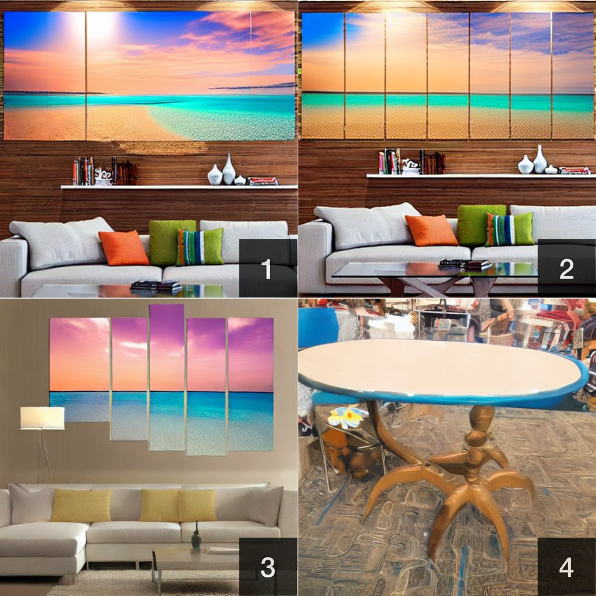
① Wen et al. (2024) · ② Ren et al. (2024) · ③ Hintersdorf et al. (2024) · ④ Jain et al. (2025)
Memorization is decided in the first few stepsText guidance is turned on for only the first k denoising steps, then turned off.
Prompt: "The No Limits Business Woman Podcast"
Reachability-Aware Diffusion SteeringTreat denoising as a dynamical system and borrow a safety tool from control theory.
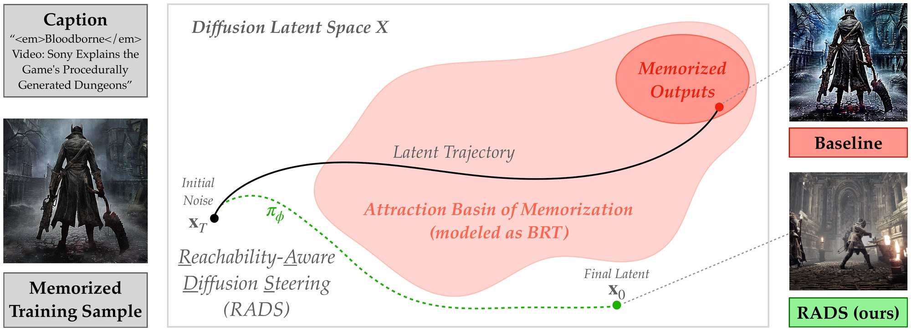
In robotics, reachability analysis asks which states will inevitably lead a system into failure. RADS asks the same question about image generation. The state is the noisy latent, the control is a small nudge to the caption embedding at each step, and failure is a state with an unusually large classifier-free guidance (CFG) norm, a known signature of memorization.
RADS never changes the diffusion model. Instead, it trains a separate, lightweight steering policy \(\pi_\phi\) that runs alongside the frozen model and decides how to nudge the caption at every step.
- Add a steering policy. \(\pi_\phi\) is a small MLP, separate from the diffusion model. At each denoising step it looks at the current state (the noisy latent and timestep) and outputs a nudge \(u_t\).
- Apply the nudge to the caption. A VAE compresses the 77×768 CLIP caption embedding into 64 dimensions. The policy's nudge is added there, and the frozen diffusion model receives \(\tilde{e}_t = \mathrm{Dec}(\mathrm{Enc}(e_c) + u_t)\) in place of the original embedding.
- Flag risky states. A target function \(\ell\) turns negative once the CFG norm \(\lVert \epsilon_\theta(x_t, \tilde{e}_t) - \epsilon_\theta(x_t, \varnothing) \rVert_2\) passes a threshold \(\beta\).
- Learn a safety critic. A second small network, \(Q^{\text{safe}}\), predicts whether the trajectory will enter that failure set at any later step, using a minimum-over-time backup (below).
- Train the policy offline. Constrained soft actor-critic updates only \(\pi_\phi\) and its critics. It maximizes the CLIP image–text similarity of the final image, subject to \(\mathbb{E}[Q^{\text{safe}}] \ge \delta\), enforced with a Lagrange multiplier.
- Steer at sampling time. Only the trained policy is needed: one forward pass per denoising step, plugged into the unchanged diffusion model.
Less memorization, same image qualityStable Diffusion v1.4 with DDIM sampling. Up and to the right is better.
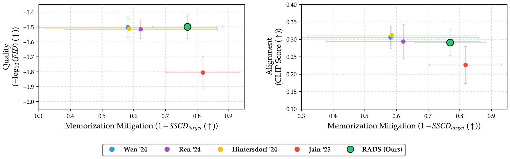
Swipe the plot to see prompt alignment →
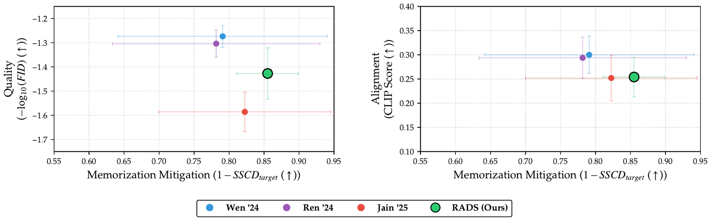
Swipe the plot to see prompt alignment →
What the policy learns
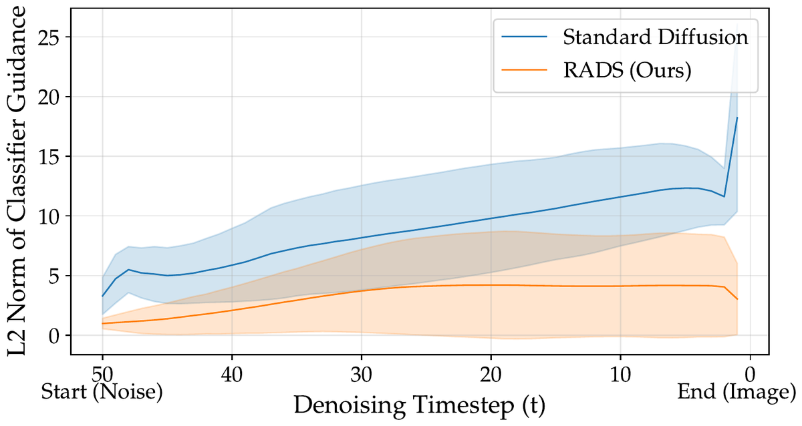
- Cheap at sampling time: 2.9 s per image on an A100, versus 2.3 s with no mitigation and 104 s for Hintersdorf et al.
- Leaves ordinary prompts alone: on 1,000 COCO captions, CLIP moves from 0.312 to 0.308 and FID from 5.45 to 5.26.
- Works on SDXL: on an SDXL model fine-tuned to memorize 51 images, similarity to the training image drops from 0.49 to 0.36.
ExamplesEach tile shows four random seeds for the same prompt.
Diverse images instead of one copy
Prompt: "Michael Fassbender to Star In Assassin's Creed Movie"
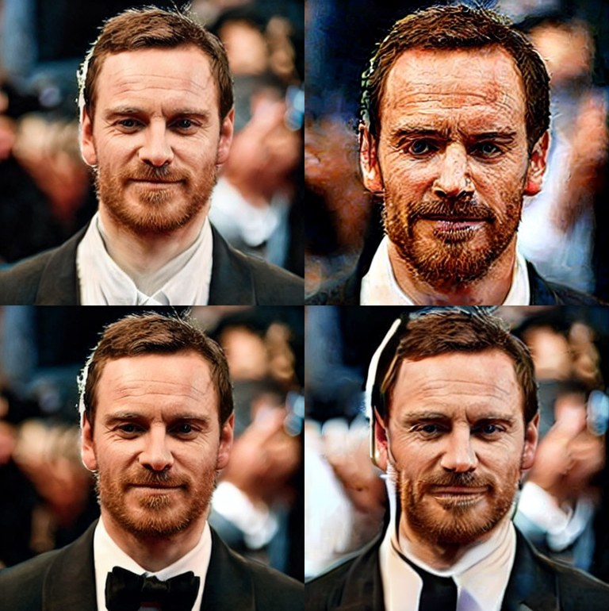
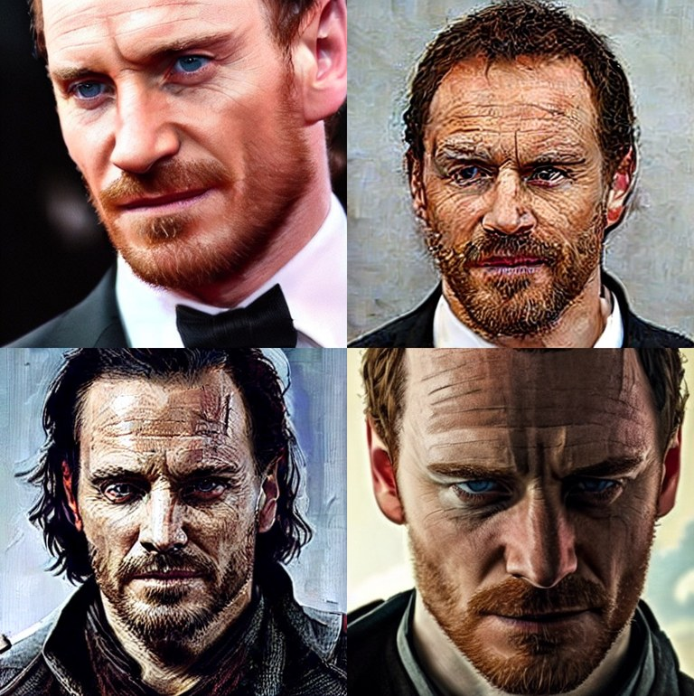
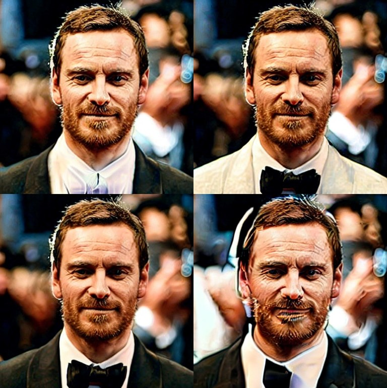
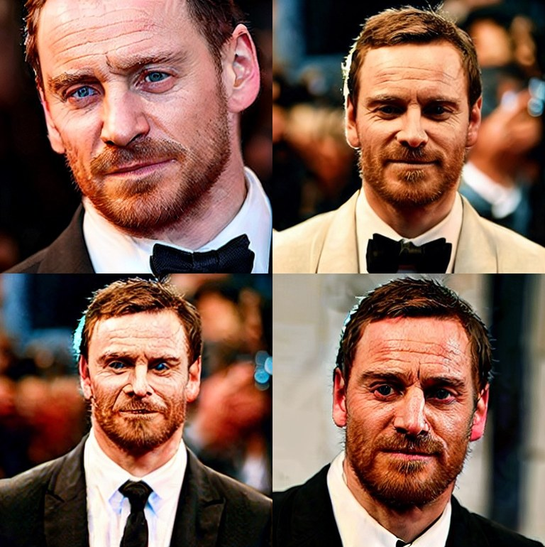
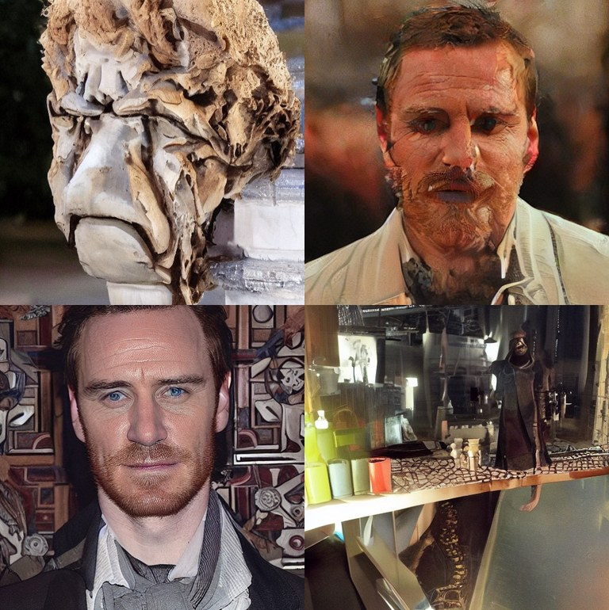
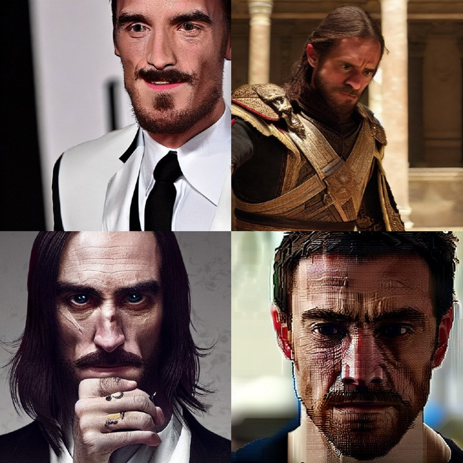
Ren et al. and Hintersdorf et al. keep returning the red-carpet photo, and Jain et al. loses image quality. RADS gives four distinct, clean images.
A prompt the baselines can't escape
Prompt: "Dredd Sequel Would Require More Star Power According to Producer"
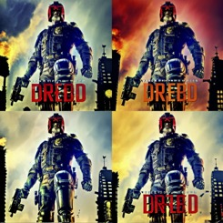
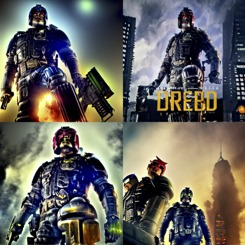
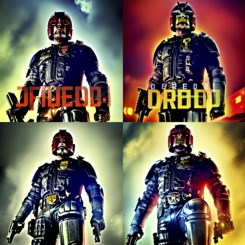
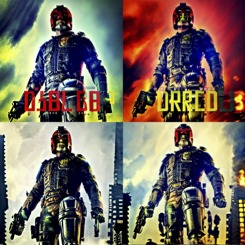
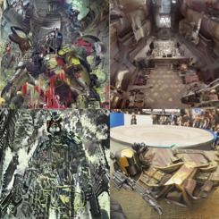
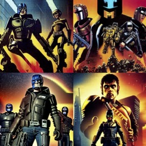
Ren et al. and Hintersdorf et al. reproduce the memorized poster on every seed, and Wen et al. escapes on only some seeds. Jain et al. avoids the copy but the images become unrecognizable. RADS avoids it on every seed while keeping the action-film style.
Citation
@inproceedings{karnik2026steering,
title = {Steering Away from Memorization: Reachability-Constrained
Reinforcement Learning for Text-to-Image Diffusion},
author = {Karnik, Sathwik and Kim, Juyeop and Koyejo, Sanmi and
Lee, Jong-Seok and Bansal, Somil},
booktitle = {Advances in Neural Information Processing Systems (NeurIPS)},
year = {2026}
}